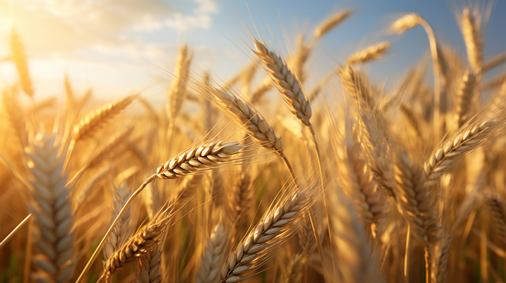
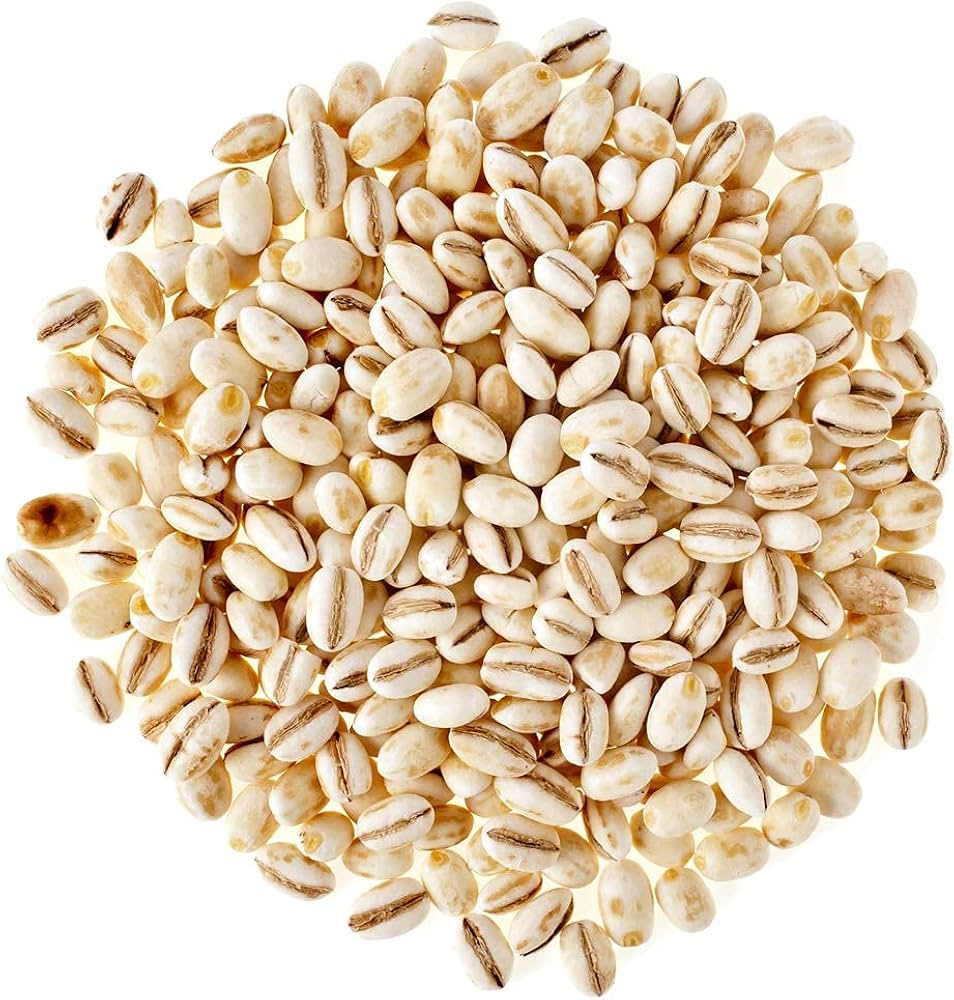
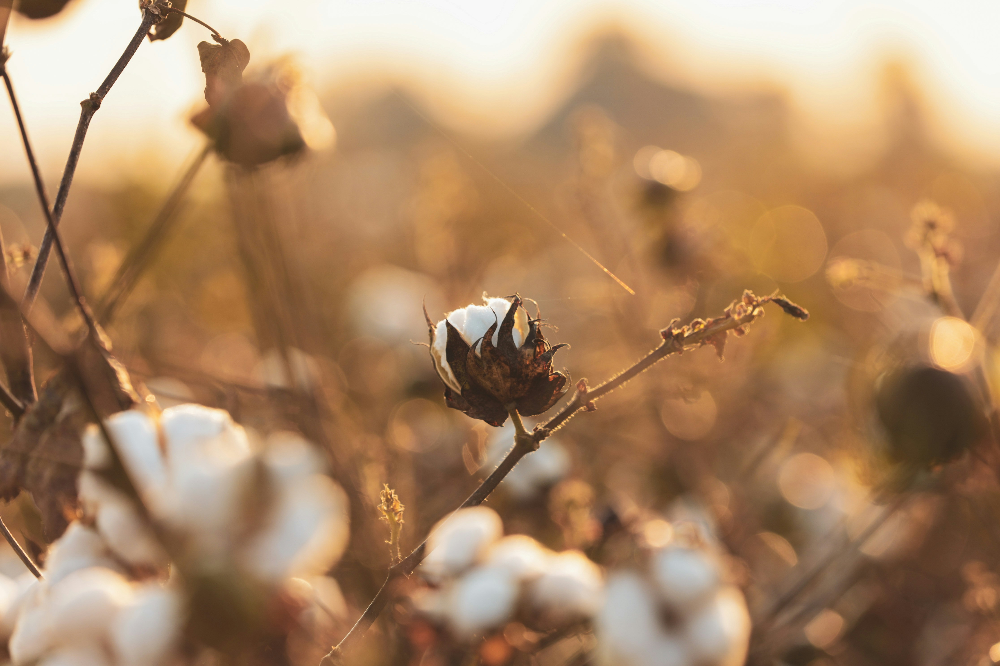
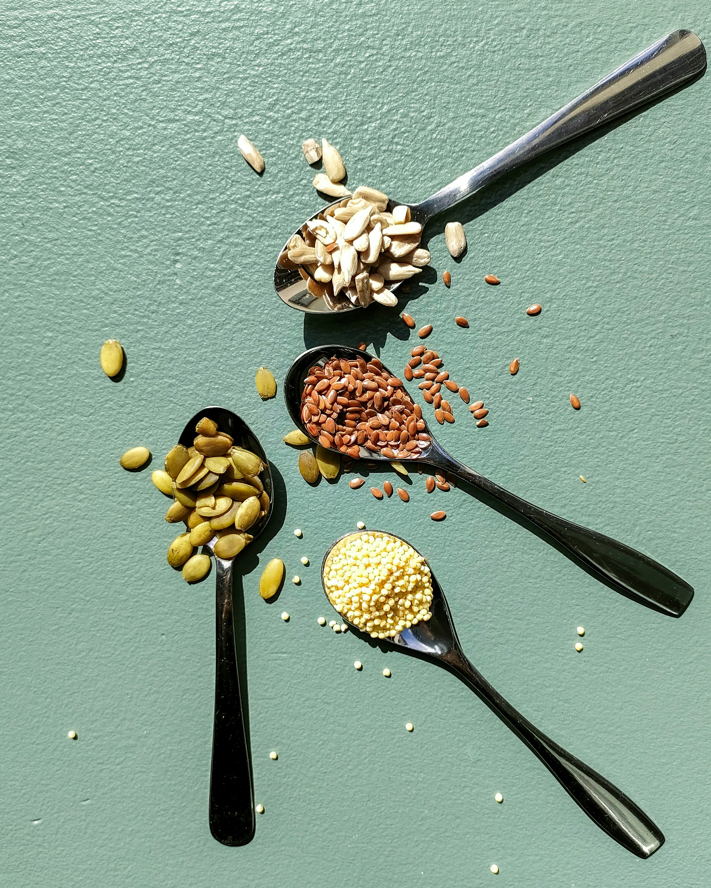
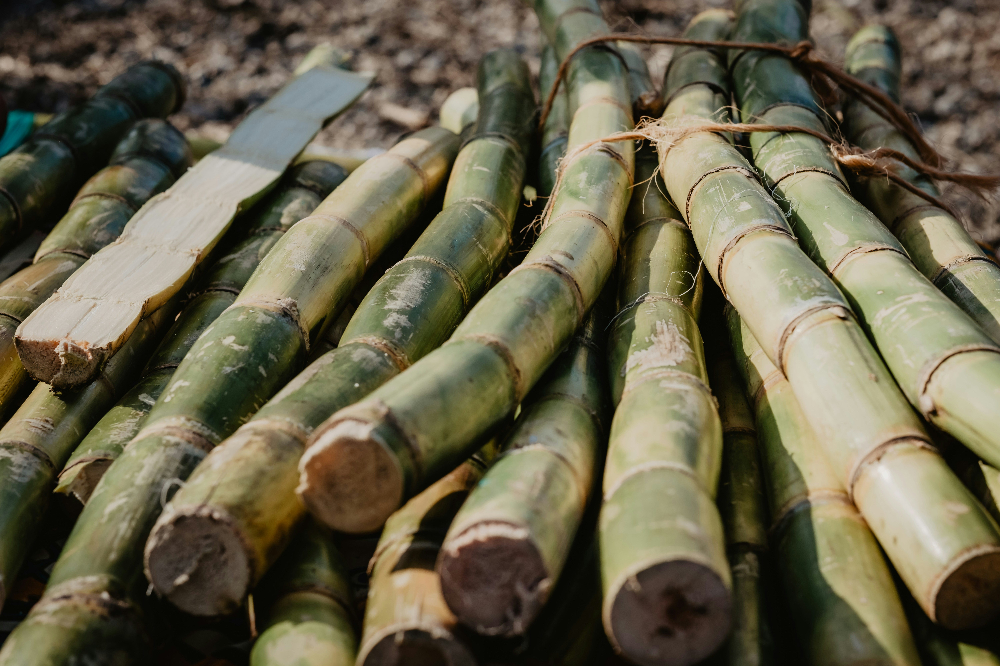
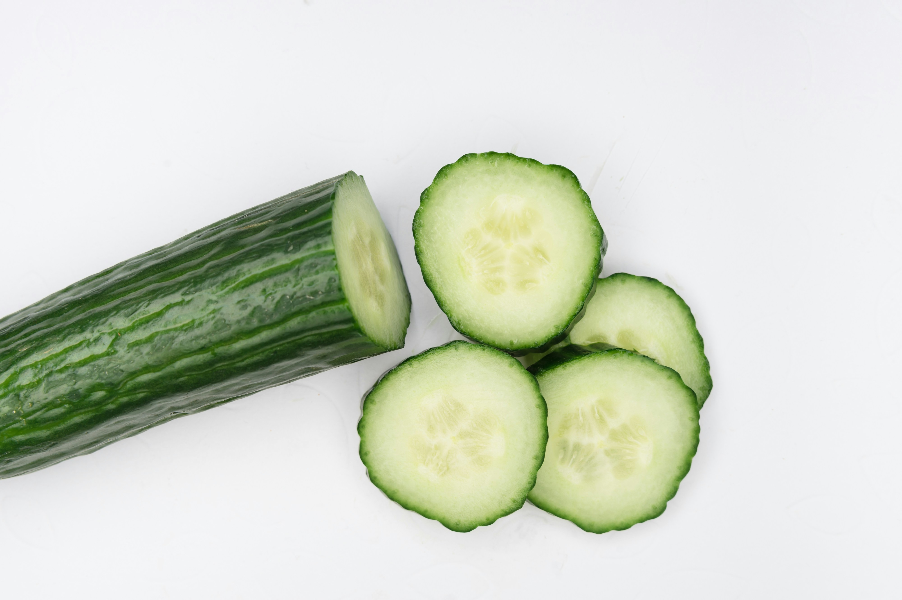
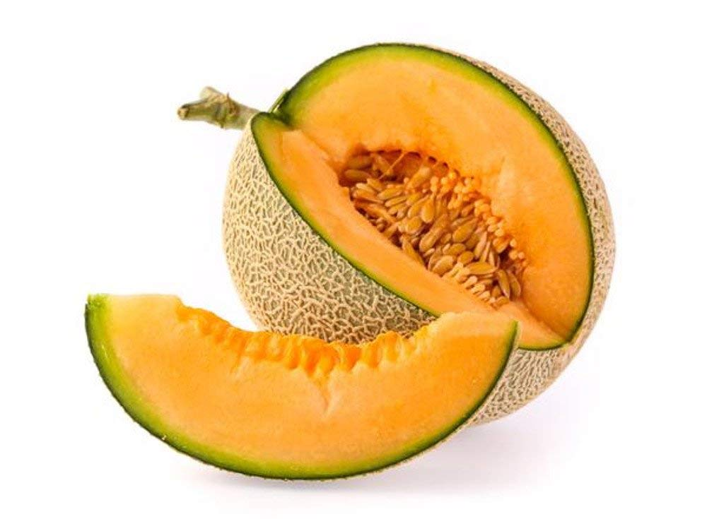
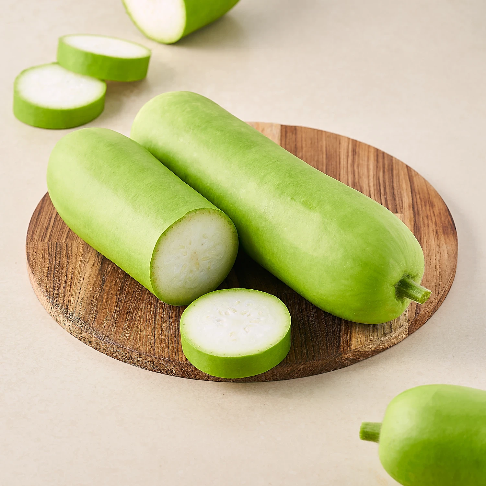

Seasonal Crops in India

Wheat (Rabi)
A staple Rabi crop sown in winter and harvested in spring. It thrives in cool, dry climates and is rich in carbohydrates. Wheat is used in making bread, chapatis, pasta, and many bakery items. India is among the top wheat-producing countries in the world.

Mustard (Rabi)
Mustard is cultivated for its oil-rich seeds and pungent flavor. It grows well in cool, dry winters and is popular across northern India. Besides oil, mustard leaves are also consumed as a green leafy vegetable. Its bright yellow flowers bloom beautifully in winter fields.

Barley (Rabi)
Barley is a hardy, fast-growing winter cereal. It’s used as animal feed, in health foods, and in brewing industries. The crop requires less water and can grow in marginal soils. It has great tolerance to salinity and drought, making it ideal for dry regions.

Rice (Kharif)
Rice is India's main Kharif crop, grown during the monsoon. It needs standing water and warm weather to thrive. As a staple food, it feeds millions daily. India is a leading producer and exporter of both basmati and non-basmati rice varieties.

Maize (Kharif)
Maize, also called corn, is a versatile Kharif crop. It is grown for human consumption, animal fodder, and industrial uses. It grows well in warm, rainy conditions and requires well-drained soil. Maize is also an important raw material in biofuel production.

Cotton (Kharif)
Cotton is a fiber crop grown mainly in warm regions. It requires a long frost-free period and moderate rainfall. India is one of the largest producers of cotton, used in textiles and garments. Its white fluffy fibers are extracted from the seed bolls.

Millets (Kharif)
Millets include grains like jowar, bajra, and ragi. They are hardy, drought-resistant crops suited for dry, less fertile lands. Millets are highly nutritious and gaining popularity as health foods. These are mainly grown in central and southern India.

Sugarcane (Kharif)
Sugarcane is a long-duration Kharif crop grown in tropical climates. It requires abundant water and warm sunlight. The crop is primarily used for producing sugar and jaggery. It also supports industries like ethanol production and paper manufacturing.

Watermelon (Zaid)
Watermelon is a juicy, refreshing fruit grown in summer between Rabi and Kharif seasons. It requires warm temperatures and plenty of sunshine. This Zaid crop grows well in sandy or loamy soils. It is widely consumed for hydration and cooling effects.

Cucumber (Zaid)
Cucumber is a fast-growing Zaid crop, ideal for summer cultivation. It thrives in warm climates with good irrigation. Often eaten raw in salads, it has cooling and hydrating properties. Cucumber plants grow best on trellises or open fields.

Muskmelon (Zaid)
Muskmelon is a popular Zaid fruit crop with a sweet fragrance. It prefers hot, dry weather and sandy soils. Rich in vitamins and water content, it's a summer favorite. The fruits are usually round with a netted outer skin and orange or green flesh.

Bottle Gourd (Zaid)
Bottle gourd is a summer vegetable rich in water and nutrients. It grows on vines and is best supported on trellises. The crop requires warm temperatures and consistent moisture. It is used in curries, soups, and even desserts like halwa.
Health-Centers
Search for the nearest Health-Centers in your locality
Agronet ChatBot
Need Help Finding More Medications?
Ask our assistant below and get quick suggestions tailored for your crop needs.
🌾 Crop Disease Detector
Upload an image of your crop or plant to detect diseases and get treatment recommendations powered by AI
📷 Click or drag image here
Supported formats: JPG, PNG, WebP